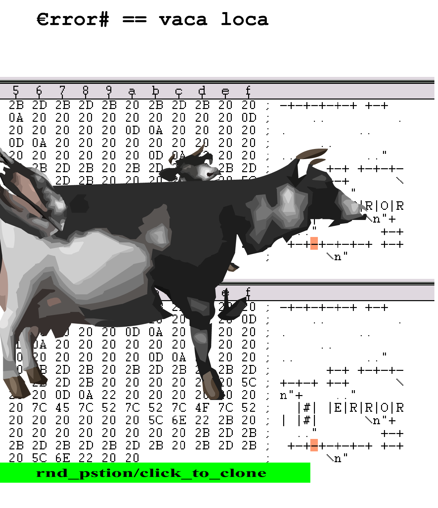

Bosma, Josephine. Nettitudes: Let's Talk Net Art. Nai Publishers, 2011.
“siempre fue una "actitud" ideologica (whatever) mas que una disciplina. de ahi justamente las multiples formas y transformas que surgieron a partir de…"
[ For a better sense of what net.art was and what its “Latin-Americanness” looked like, take a few minutes to explore the links in this database. Or just continue reading ]
Halart, Sophie, and Mara Polgovsky Ezcurra, eds. Sabotage art: politics and iconoclasm in contemporary Latin America. Bloomsbury Publishing, 2016. p. 84-102
Undoing the demos: Neoliberalism's stealth revolution p. 31

utter irrationality
Campeones de la WWW
Background + Materials
Net.Art:
Josephine Bosma defines net.art broadly as "art based in internet cultures". While most works were made for the browser, there were a few that utilized the internet without centering the browser as the main space of encounter. There is a sort of "classic look" of net.art that aligns itself with ascii art, ample ancient-looking gifs, and multi-page animations, but ultimately the category of net.art was defined not by aesthetic (or even medium), but subject matter. Brian Mackern describes it in an email as more of an attitude than a discipline– an approach to making for the online that embraced playfulness and ephemerality over commodification and institutionalization. According to Bosma, net.art was defined by "an awareness of, deep involvement in, a world transformed and affected by elaborate technical ensembles... established or enhanced through the Net". It represented an attempt to grapple with globalization, neoliberalism, etc.– all the various political implications of accelerating technology and de-regulation of capital. The net narrowed social divides in the art world (though to what degree is certainly up for debate) and became the domain of the "interdisciplinary amateur-turned-professional". With such broadened access (both in terms of production and consumption), net.art possessed a diversity of forms, aesthetics, and politics. This thesis makes no claims about net.art as a whole, but proposes a few cases as demonstrative for understanding how certain threads of net.art intertwined playfulness with politics.
Bosma outlines several broad categories of practice that net.art fell into. I elaborate here to give unfamiliar readers a general sense of the various forms net.art encompassed, not because these categories are particularly central to my argument. The five net.art practices Bosma lays out include: code, flow, screen, matter, and context. Code and software art are works that live at the level of computer code. Unlike generative software which uses code to produce art, the code or software itself is the art object. Code art presents code as a sort of poem; that code may or may not actually even be executable. Flow creates an experience of the network as physical space, using the internet to connect people to each other and to space in novel ways. (See the King's Cross phone-in.) Some net.art focuses on the screen as a space of exploration, using the tools of windowed displays, glitch, the browser, etc. to intervene in the relationship between the user and their screen. While net.art did not have agreed-upon aesthetic or procedural rules, most works tend to fit into these general schemas of how they engage the viewer.
Though net.art eventually became a global phenomenon, the first net.artists were mostly from Eastern Europe. This was largely due to the construction of a series of Soros-funded computer education centers in former Soviet countries after the fall of the USSR. In these centers, the first net.artists began to experiment with web technologies and produce works that would become canonical in the net.art and new media worlds. At the same time, mostly unbeknownst to each other, Latin American artists were doing similar work with much less recognition and inferior technology.
According to Brian Mackern himself, the first net.art appeared in Uruguay in 1996 under the moniker 'ambientación web'. In his Net.Art Latino Database book, Mackern describes how early Latin American net.artists knew more about European net.art than they knew about each other and notes that most fellow net.artistas first met at European conferences. In Latin America, net artists were technologically (poor, often slow internet infrastructure) and socially isolated, thus, building a net.artista community required conscious, intentional efforts like the founding of the nettime-lat (aka nettime-latino) listserv or the construction and curation of Mackern's own net.art latino database.
Bosma asserts that intense feelings of isolation and exclusion were recurrent themes of Latin American net.art and that certainly holds true for the cases I examine here. In error#2 and the Net.Art Certification Office, the artists mobilize playfulness as a tactic in their struggle against the marginalization of Latin America and its artistic production.
Net.artistas drew from a rich Latin American history of ephemeral, anti-institutional art. In the 1970s, mail artists began to construct a practice to disrupt bureaucracies and the systems they stood for. Halart asserts that, much like the later net artists, mail artists aimed "to reconfigure top-down mass media structures into a system of horizontal information-sharing". They did this by playfully engaging with the postal system, mailing objects that were intentionally difficult to deliver or subtly breaking postal rules censoring mail. Net artists drew from this directly, both by sending each other "e-mail art" and sharing many of the ideals and goals of their mail art predecessors. In some ways, they fought the bureaucratization of the internet just as mail artists fought the bureaucratization of the everyday. Though mail art was mostly pre-neoliberal, it critiqued desarrollismo (developmentalism) and neo-colonial hierarchies just as net.art did later on. Both movements utilized many of the same tactics– tongue-in-cheek disruptions that attempted to undermine hierarchical institutions and modes of interpreting the world. As Halart notes, both involved "'sabotaging' bureaucratic systems by interfering with or disrupting the assumptions upon which they were based."
Neoliberalism:
One of the main reasons playfulness and its accompanying irrationality was so effective, was because it directly undermined the neoliberal idea of totalizing rationalization. Brown asserts,
"neoliberal rationality disseminates the model of the market to all domains and activities –-even where money is not at issue–-and configures human beings exhaustively as market actors, always, only, and everywhere as homo oeconomicus."
Neoliberalism seeks to subsume all political life and human activity into market rationale. People are reduced to interchangeable units of rational consumption and interchangeable units of exploitable labor. Brown continues,
"rational-choice-theory ... represents a further development of what Herbert Marcuse termed the 'closing of the political universe'–the erasure of intelligible, legitimate alternatives to economic rationality."
The 'closed' neoliberal political universe caused significant damage across Latin America (and the world). Brown notes that it was marked by growing inequality, increased commercialization of social spheres that had previously been held separate from the market, increased domination of the state by capital interests, and economic havoc wrought by wilder fluctuations of a newly-deregulated market. In Latin America, neoliberalism was often instituted by harsh military dictatorships; Chile became one of the world's first neoliberal countries after Pinochet's coup (aided and abetted by the University of Chicago, it must be noted). Another consequence was that national economic policies were increasingly dictated by foreign capital, rather than by elected officials. Debts owed by Latin American countries became tools by which they were coerced into implementing the neoliberal package of deregulations. Thus, with the state no longer in control of wealth distribution in the newly deregulated market, opposition to income inequality became an economic, market-oriented battle instead of a political one– the degradation of the individual from political actor to rational market actor was complete.
This all-consuming rationality, and its inhumane consequences represent a crucial frame of reference for the cases I study. Because neoliberal rationality was so hegemonic, these works' embrace of playful irrationality as a mode of politics disrupts Ranciere's 'distribution of sensible forms' (discussed further in 'Methods' section). That is, through irrationality, they challenge the omnipresence of neoliberal worldview and demand interactions from viewers that transcend market rationality. The procedural rhetoric of these works refuses rational engagement, demanding its audience abandons the neoliberal in favor of the playful.
Materials:
The primary cases for this study are three net.artworks from early two-thousands found through Brian Mackern's net.art latino database or the nettime-lat email archives. This database of a few thousand emails from 2000-2004 represents the largest archive of the communications of the dispersed net.artista community. They represent a crucial source, and I refer to them constantly throughout this thesis. Combing through the emails gave me nearly un-mediated insight into how the community thought about their work and how this appeared in the art.